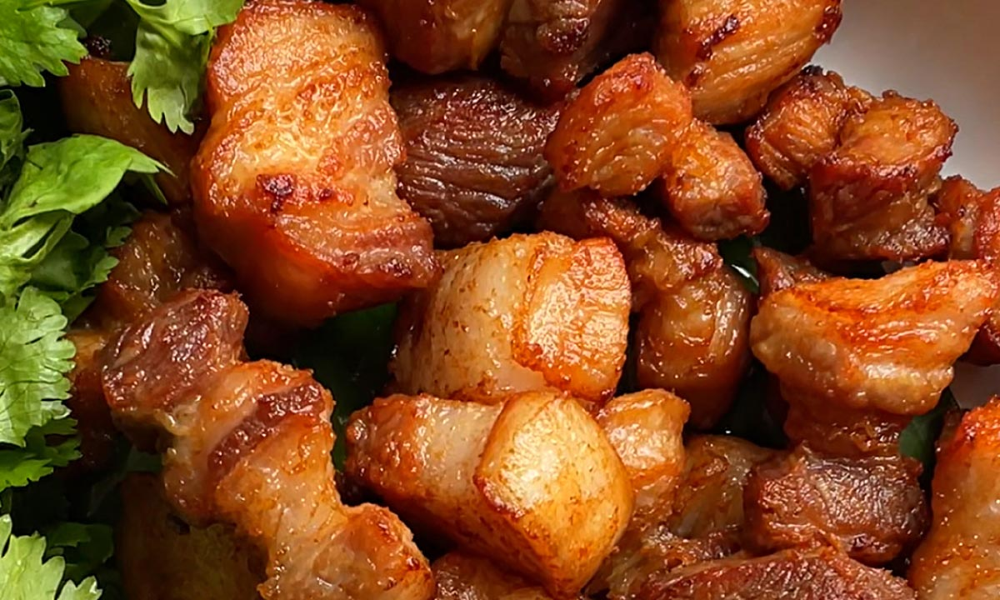

หมูสามชั้นทอดน้ำปลา

ส่วนผสม
- หมูสามชั้น 600 กรัม
- น้ำปลา 1 ช้อนโต๊ะ (ชอบรสจัดใส่ 1 1/2 ช้อนโต๊ะ)
วิธีทำหมู3ชั้นทอดน้ำปลา
- นำหมูสามชั้น แร่เอาหนังออก จากนั้นหั่นเป็นชิ้นๆ แนะนำว่าหั่นให้ค่อนข้างหนาประมาณ 1.5 เซนติเมตร
- นำหมูสามชั้นใส่ลงไปในกระทะ ตามด้วยน้ำปลา และน้ำมันพืชตามลงไป
- เปิดเตา ใช้ไฟแรงสุด คนเล็กน้อยให้น้ำปลากระจาย รอจนกระทะร้อน
- ทอดหมูและคอยคนไปเรื่อยๆ ประมาณ 7-8 นาที จนหมูออกสีเหลืองสวย
- ทอดต่ออีก 7-8 นาทีโดยใช้ไฟแรงต่อเนื่อง ตักขึ้นมาพักน้ำมัน เป็นอันเสร็จ